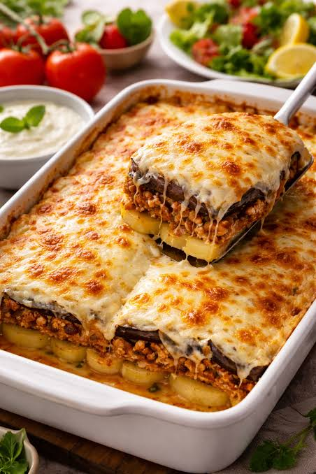

How to make Moussaka

There’s 4 components to Moussaka:
- cooking the eggplant;
-
the meat sauce, a rich Bolognese type sauce made with
lamb or beef but with traditional Greek flavours of oregano and
cinnamon;
-
thick béchamel sauce – thicker than
used in Lasagna and things like Broccoli Gratin, it’s semi-set using
eggs;
- layering it all up, lasagna style.
Incidents
Eggplant
- 1 kg / 2 lb eggplant (aubergines) , 0.75cm / 0.3″ thick slices
- 1 tsp salt
- 2 – 3 tbsp olive oil
Filling
- 1 tbsp olive oil
- 1 onion, diced (brown, white, or yellow)
- 3 garlic cloves, minced
- 700 g (1.4 lb) ground beef or lamb (mince)
- 1/2 cup dry red wine (optional)
- 400 g (14 oz) crushed tomatoes
- 3 tbsp tomato paste
- 1 cup beef broth/stock
- 1 beef bouillon cube, crumbled (or 1 tsp powder)
- 2 bay leaves
- 1.5 tsp sugar
- 2 tsp dried oregano
- 1/2 tsp cinnamon (or 1 cinnamon stick)
- 3/4 tsp salt
Filling
- 4 tbsp (60 g) butter
- 5 tbsp plain flour
- 2 1/2 cups milk (any fat %)
- 1/4 tsp freshly grated nutmeg (optional)
- 1/2 cup grated Parmesan (or Kefalotiri cheese)
- 1 egg
- 1 egg yolk
- 1 1/4 tsp Vegeta (vegetable or chicken stock powder) or salt
- 1/4 tsp black pepper
Bechamel Sauce
- 4 tbsp (60 g) butter
- 5 tbsp plain flour
- 2½ cups milk (any fat %)
- ¼ tsp freshly grated nutmeg (optional)
- ½ cup grated Parmesan or Kefalotiri cheese
- 1 egg
- 1 egg yolk
- 1¼ tsp Vegeta (vegetable or chicken stock powder), or salt
- ¼ tsp black pepper
Topping
- 1/3 cup panko breadcrumbs
Instructions
Eggplant
-
Place the eggplant slices slightly overlapping in a large colander.
Sprinkle with salt, then repeat with the remaining eggplant.
-
Leave to sweat for 30 minutes. Meanwhile, prepare the Meat Sauce and
Béchamel Sauce.
- Preheat the oven to 240°C (450°F).
-
Pat the eggplant dry thoroughly to remove excess salt. Arrange on
parchment-lined baking trays and brush with olive oil.
-
Bake for 15–20 minutes, or until lightly browned and softened. Remove
from the oven and set aside to cool slightly.
Meat Sauce
-
Heat the olive oil in a large skillet or pot over high heat. Cook the
onion and garlic for 2 minutes.
-
Add the ground beef or lamb and cook until browned, breaking it up as it
cooks.
-
Pour in the red wine and cook for about 1½ minutes, until the alcohol
smell disappears.
- Add the remaining sauce ingredients and stir well to combine.
-
Bring to a simmer, reduce the heat to medium-low, and cook for 15
minutes until the sauce is thick.
Béchamel Sauce
-
Melt the butter in a saucepan over medium heat. Add the flour and cook
for 1 minute, stirring constantly.
- Gradually whisk in the milk while stirring continuously.
-
Cook for 3–5 minutes, stirring regularly, until the sauce thickly coats
the back of a wooden spoon.
-
Remove from the heat and whisk in the Parmesan, nutmeg, Vegeta (or
salt), and black pepper.
-
Let the sauce cool for 5 minutes, then whisk in the egg and egg yolk.
Cover until ready to use.
Assemble
- Reduce the oven temperature to 180°C (350°F).
-
Arrange half of the baked eggplant in the bottom of a baking dish.
- Spread the Meat Sauce evenly over the eggplant.
- Top with the remaining eggplant slices.
-
Pour the Béchamel Sauce over the top and sprinkle with breadcrumbs.
- Bake for 30–40 minutes, or until golden brown.
- Let the moussaka rest for 10 minutes before serving.
Source
Home